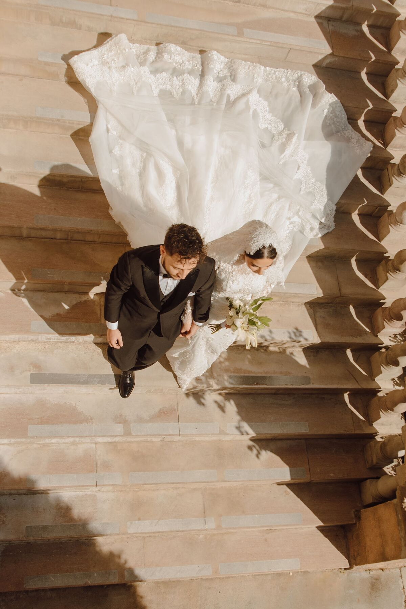
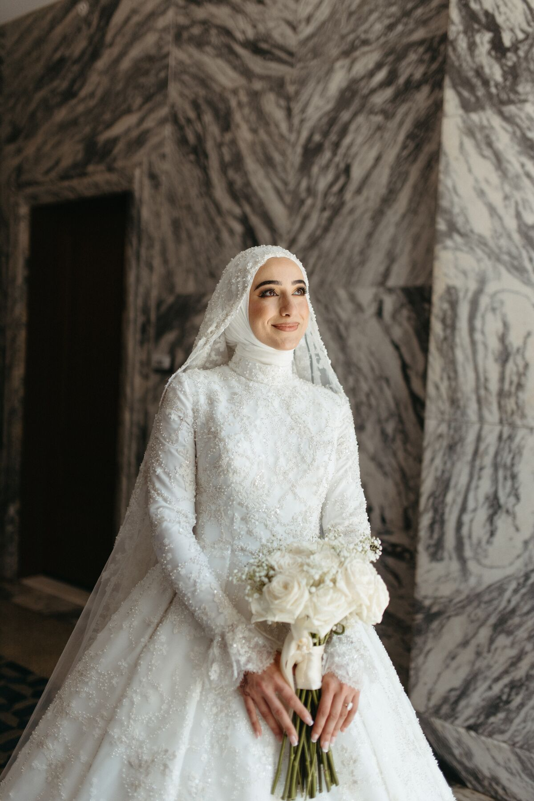
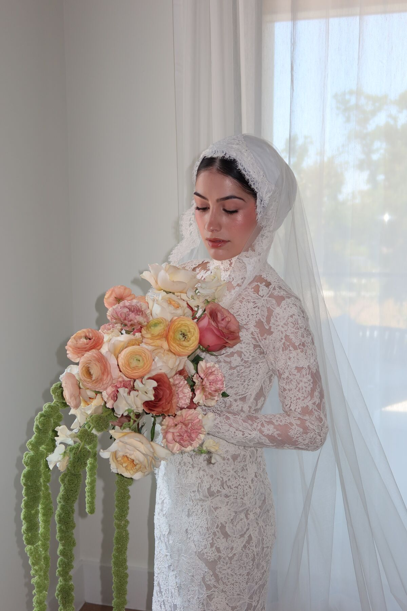
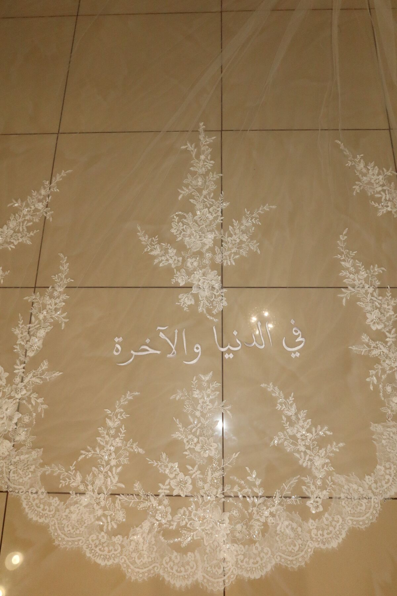
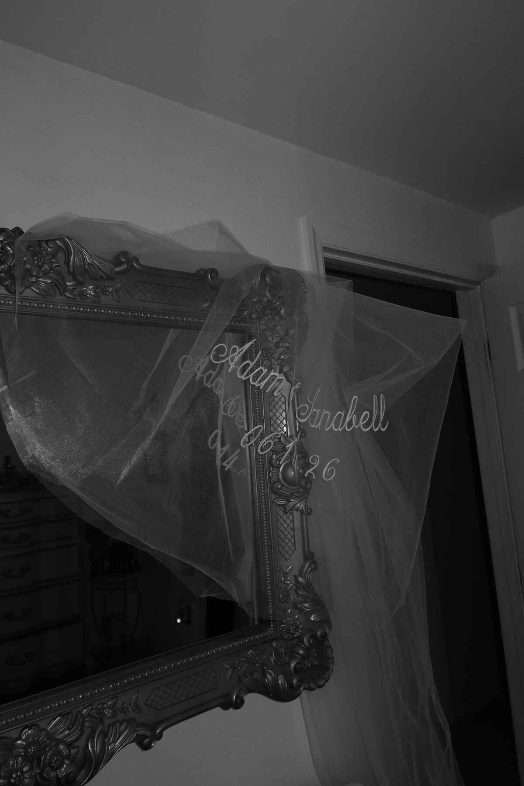
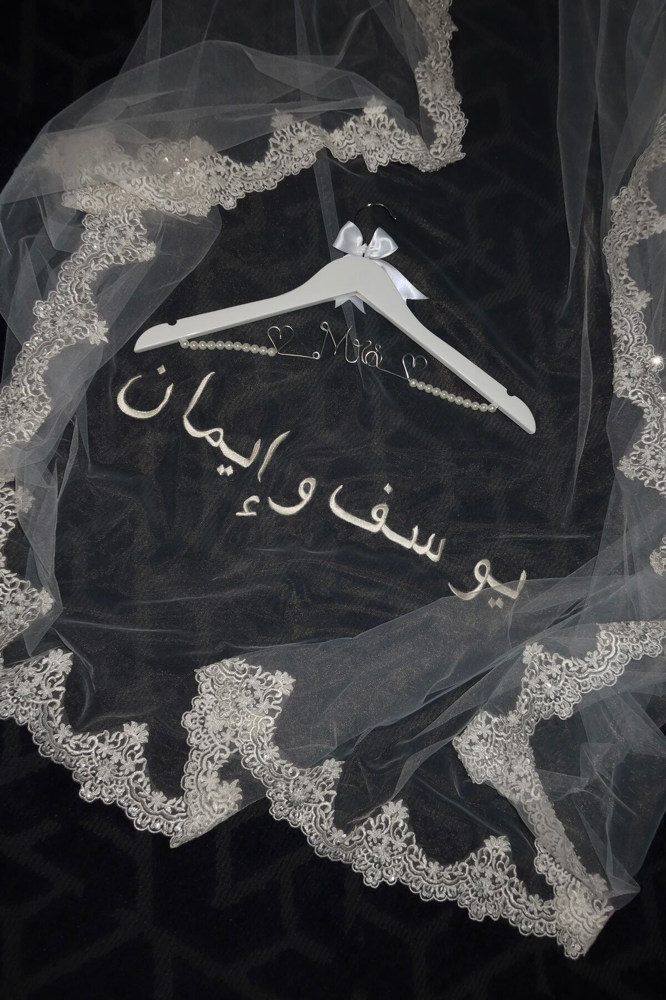
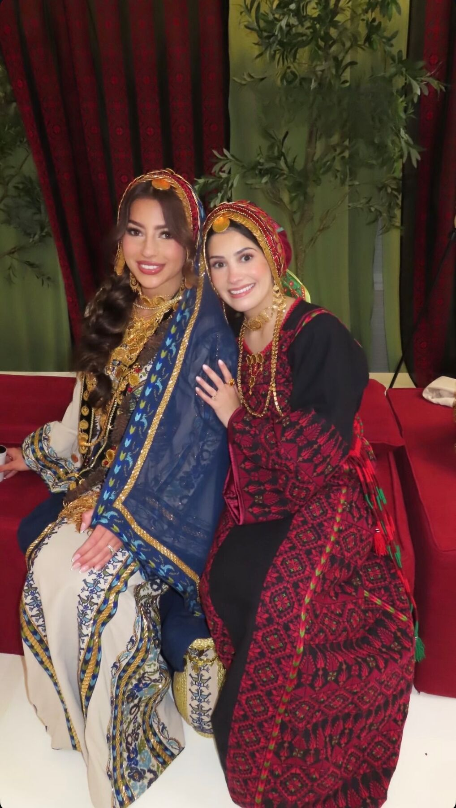
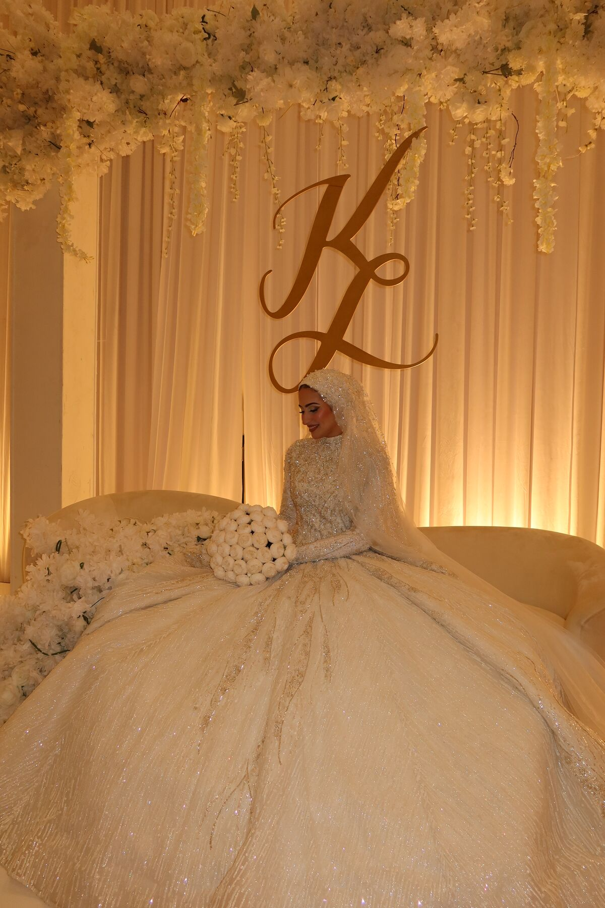
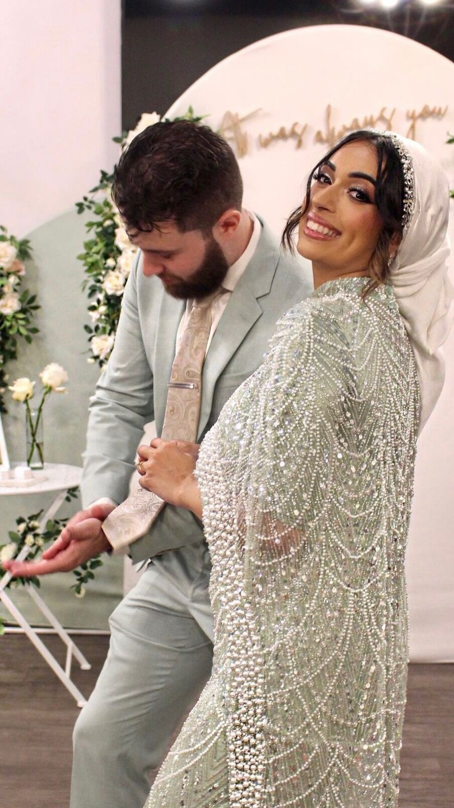
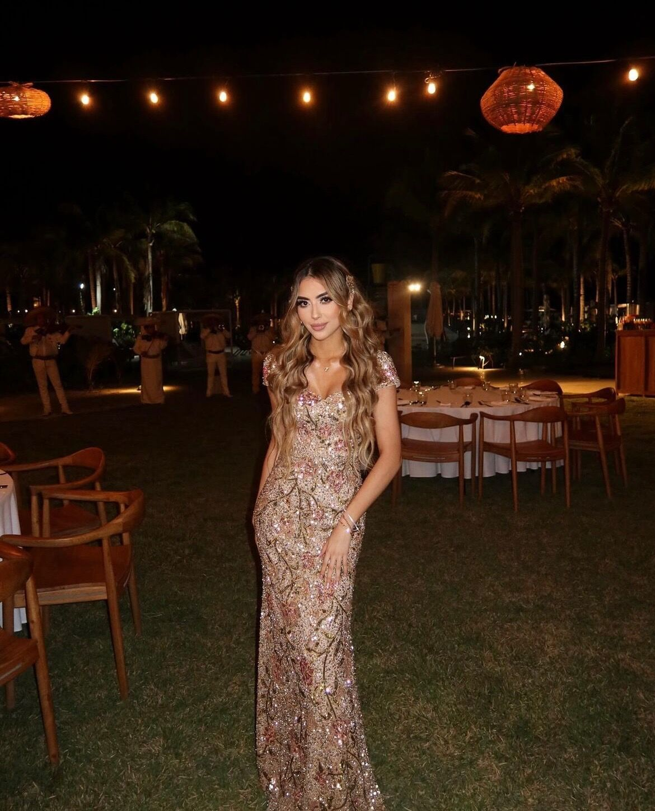

Design direction for HaanaSewing — built by Sadeeq Solutions, not yet live. Portfolio photography is Haana's own; the hero is a reel of four of her clips. Prices shown are market benchmarks standing in for Haana's real numbers.
Bridal alterations and veil work, custom embroidery, thobes, turbans and hijabs, and dresses of every other kind. Whatever you're wearing and whatever you're wearing it for, it should fit like it was made for you.
Organized the way the work actually divides — by season, and by what was made rather than what was hemmed.










Every piece is different, so these are ranges. You get an exact figure at your first fitting, before any work starts.
Hem, bustle, bodice, straps, cups and closures — the whole fit, from the first pin to the final press. If you want the design changed and not just the size, that's the same conversation: sleeves added, a neckline raised or lowered, a back closed or opened. Beaded and structured gowns take longer and are priced after I've seen the dress.
Made from scratch: your length, tier count, tulle or silk, and the edge you want — raw-cut, corded, horsehair, ribbon or lace appliqué — designed and finished to your gown and your preferred bridal style.
Or bring the veil you already have — an heirloom, a sample-sale find, or the one that came with the dress — and I'll customize it into the style you want: shortened or lengthened, re-edged to match your lace, a tier added or taken off, blusher on or off, or the gather at the comb redone.
Hand and machine embroidery, in whatever language you want it in. A name, a date, an ayah, a line of a poem, initials hidden inside a cuff — Arabic, English, or a script I've never set before. Write it out the way you want it to read and I'll match the hand.
On a veil, a gown lining, a thobe, a suit, sleeves, or on a piece you already own and aren't otherwise having altered.
Taken in, let out, shortened, extended, relined, sleeves reset — and the belt with it: resized, restitched, re-edged or remade so it sits where you want it to sit. Bring a reference photo if you want the shape changed rather than just the fit.
Everything that isn't a wedding gown — evening, engagement and walima, prom, graduation, work, everyday. Same fitting, smaller job, usually one visit and a pickup.
Made to your gown, your fabric and your face — not pinned on the morning of. Includes a styling session so you, or whoever is helping you dress, can re-tie it on the day.
The same three steps for every piece, whether it's a wedding gown or a hem taken up.
Bring the dress, your shoes, and the undergarments you'll actually wear. We agree the work and the price before anything is cut.
As many fittings as the piece actually needs. If you're wearing a hijab or a turban, it's fitted alongside the gown, not after it.
A last look at everything on you, together. If anything still needs adjusting, it gets adjusted before you take it home.
If yours isn't here, message me — but most of it is here.
Usually, yes. Sleeves added, a neckline raised or lowered, a back opened or closed, a lining built in — most gowns will take a real design change without losing the shape the designer intended. Send me photos of the front and back and I'll tell you honestly whether it's worth doing before you book.
For alterations, three months before the wedding. For a custom hijab, turban or a piece made from scratch, four to six months. If your date is sooner than that, message me anyway — I keep a little room for short-notice work.
Part of it, always. The gown's neckline and the covering have to be designed as one thing, otherwise you end up pinning fabric over a neckline that was never meant to carry it. Not every bride wants one — but if you do, it's fitted with the dress, not on top of it.
The dress, the shoes you'll wear on the day, and the undergarments you'll wear underneath. Bring your veil, hijab or turban fabric if you already have it. If you're bringing someone, bring the person who'll help you dress — they'll learn the bustle.
Two to three for most gowns. Heavily beaded or structured dresses sometimes need a fourth. A non-bridal alteration is normally one. Each is about an hour.
Service area and studio details go here — this is the single most important thing to add before the site goes live.
Consultations are booked online. Tell me your wedding date when you book and I'll tell you straight away whether we have enough time.